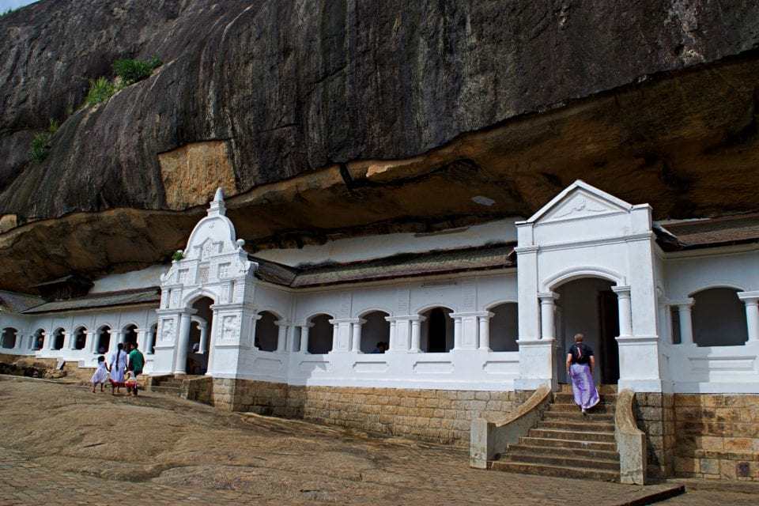
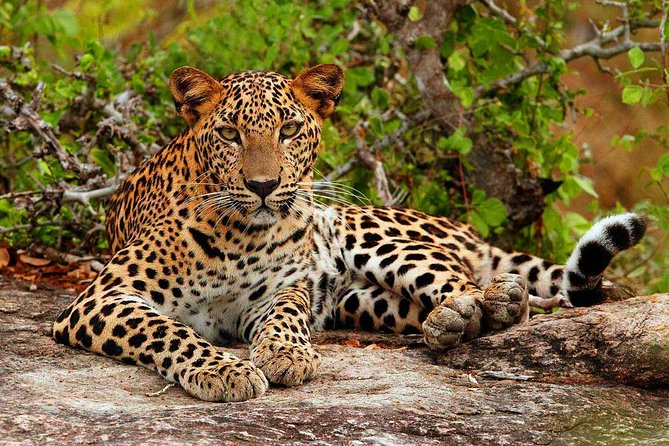
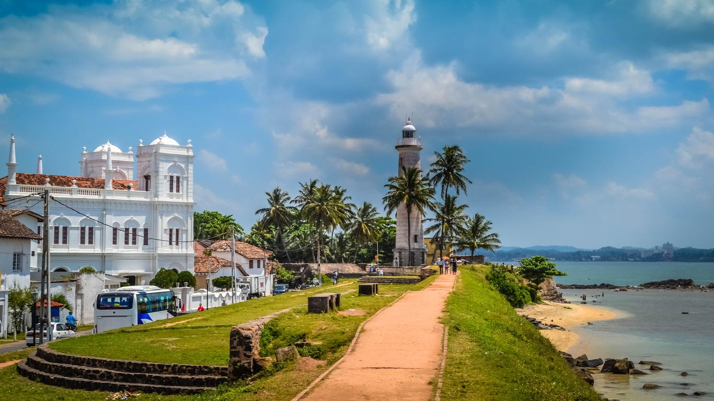
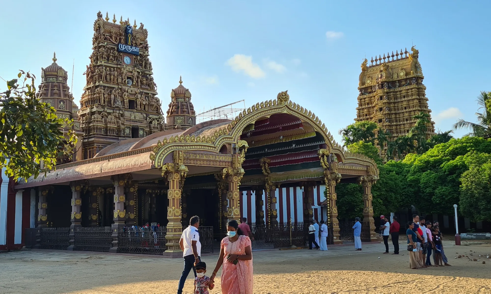
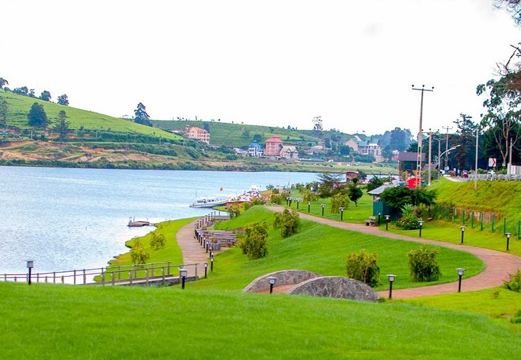
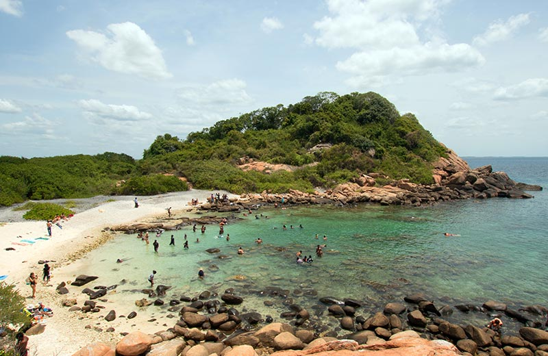
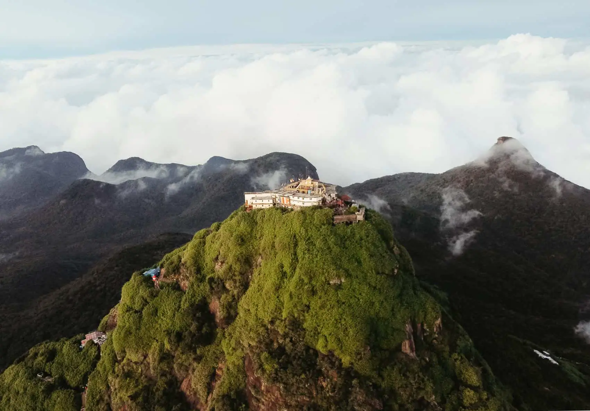

The Dambulla Cave Temple
The most popular among the best places to visit in Sri Lanka is the Dambulla cave temple. It tops the Sri Lanka tourist destinations. The largest temple complex in Sri Lanka, its statues and paintings date back to the 12th Century AD. The temple complex has five rooms of different sizes; all rooms have Buddha in a different position looking calm and peaceful. The temple is built on a black rocky mountain which serves as a nice contrast with the white walls of the temple. Don't miss the view from the top. The temple can be easily accessed from both Colombo and Kandy. ">
The most popular among the best places to visit in Sri Lanka is the Dambulla cave temple. It tops the Sri Lanka tourist destinations. The largest temple complex in Sri Lanka, its statues and paintings date back to the 12th Century AD. The temple complex has five rooms of different sizes; all rooms have Buddha in a different position looking calm and peaceful. The temple is built on a black rocky mountain which serves as a nice contrast with the white walls of the temple. Don't miss the view from the top. The temple can be easily accessed from both Colombo and Kandy. ">
Yala National Park
Missing Yala National Park while Sri Lanka sightseeing might bring regret to wildlife lovers. It is home to a host of wildlife and birds you are bound to run into a group of elephants bathing in streams, tossing their trunks wildly or leopards nestling lazily on tree branches. You could opt for the safari drives or a nature trail among the thick green foliage of the forest. Some tourists also camp at Yala and enjoy a barbeque under the stars. With so much to see and do here, Yala is indeed one of the best tourist places in Sri Lanka. Yala is the perfect place to try your hand at wildlife photography.">
Missing Yala National Park while Sri Lanka sightseeing might bring regret to wildlife lovers. It is home to a host of wildlife and birds you are bound to run into a group of elephants bathing in streams, tossing their trunks wildly or leopards nestling lazily on tree branches. You could opt for the safari drives or a nature trail among the thick green foliage of the forest. Some tourists also camp at Yala and enjoy a barbeque under the stars. With so much to see and do here, Yala is indeed one of the best tourist places in Sri Lanka. Yala is the perfect place to try your hand at wildlife photography.">

Galle
Galle is an important city in Sri Lanka and is a one-stop destination wherein you can take in all sights and sounds. One of the best places to visit in Sri Lanka is the Galle Fort. The Galle Fort area has wide cobblestoned roads and a number of eateries and cafes. Try and catch the sunset while you are there. There are a number of trinket shops and galleries that you can visit. It is among the most visited places in Sri Lanka.">
Galle is an important city in Sri Lanka and is a one-stop destination wherein you can take in all sights and sounds. One of the best places to visit in Sri Lanka is the Galle Fort. The Galle Fort area has wide cobblestoned roads and a number of eateries and cafes. Try and catch the sunset while you are there. There are a number of trinket shops and galleries that you can visit. It is among the most visited places in Sri Lanka.">
Jaffna
Although a bit crowded, the temple Nallur Kovil is a nice pick among the best places to see in Sri Lanka. Another place of interest is the Jaffna Fort. This fort is in the center of the city and is a tourist hub. If youre in Jaffna, you cannot miss the Nagadipa Purana Vihara, the temple can be accessed by boat. One of calmest among Sri Lanka tourist attractions, the temple is surreal and a wonderful place to meditate.">
Although a bit crowded, the temple Nallur Kovil is a nice pick among the best places to see in Sri Lanka. Another place of interest is the Jaffna Fort. This fort is in the center of the city and is a tourist hub. If youre in Jaffna, you cannot miss the Nagadipa Purana Vihara, the temple can be accessed by boat. One of calmest among Sri Lanka tourist attractions, the temple is surreal and a wonderful place to meditate.">
Nuwara Eliya
Nuwara Eliya is most famous for its tea gardens and scenery. It is a perfect place to visit for a romantic vacation or for someone who is looking for a relaxing trip. With misty clouds, lush green sloping hills and a train that looks that it has come out of the Harry Potter films, Nuwara Eliya is a hilly paradise and another great addition to Sri Lankas tourist attractions. The popular places to visit in Nuwara Eliya include Victoria Park, Bale Bazaar, Moon Plains, Ramboda Falls and St. Clair’s Falls.">
Nuwara Eliya is most famous for its tea gardens and scenery. It is a perfect place to visit for a romantic vacation or for someone who is looking for a relaxing trip. With misty clouds, lush green sloping hills and a train that looks that it has come out of the Harry Potter films, Nuwara Eliya is a hilly paradise and another great addition to Sri Lankas tourist attractions. The popular places to visit in Nuwara Eliya include Victoria Park, Bale Bazaar, Moon Plains, Ramboda Falls and St. Clair’s Falls.">
Trincomalee
Trincomalee, among many similar Sri Lanka tourist spots, is blessed with a beautiful beach. If you are up for an underwater diving tour, then SLDT (Sri Lanka Diving Tours) will give you the best experience. Besides water sports, there are also many temples and beaches in Trincomalee. There's also a war cemetery which is surrounded by lush gardens, which makes it one of the best places to see in Sri Lanka.>
Trincomalee, among many similar Sri Lanka tourist spots, is blessed with a beautiful beach. If you are up for an underwater diving tour, then SLDT (Sri Lanka Diving Tours) will give you the best experience. Besides water sports, there are also many temples and beaches in Trincomalee. There's also a war cemetery which is surrounded by lush gardens, which makes it one of the best places to see in Sri Lanka.>
![<b><i>Polonnaruwa Sacred City</i></b><br>This city was once the ancient kingdom of Sri Lanka and walking into this still gives a feeling of the Golden Age.
Inside one of the most popular Sri Lanka tourist spots, there are still ruins of palaces,
shrines and stupas which makes it one of the top tourist attractions in Sri Lanka. All these landmarks give closure to the historical remains which hold a glorious past.
This place has a lot to explore and gives a peek to the golden past of this side of Sri Lanka. It is among the best Sri Lanka tourist places.](Image/Polonnaruwa.jpg)
Adam’s Peak
Adam’s Peak is another famous tourist attractions in Sri Lanka. The topmost point of the peak has a footprint cast in stone which has spiritual significance to different religions. Many pilgrimage trek to the top on full moon nights. Most of them also start hiking around 3 AM to reach the summit by sunrise for a splendid view. It is also one of the most popular honeymoon places in Sri Lanka.">
Adam’s Peak is another famous tourist attractions in Sri Lanka. The topmost point of the peak has a footprint cast in stone which has spiritual significance to different religions. Many pilgrimage trek to the top on full moon nights. Most of them also start hiking around 3 AM to reach the summit by sunrise for a splendid view. It is also one of the most popular honeymoon places in Sri Lanka.">
×